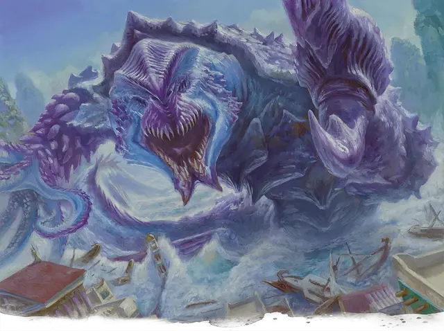

Тромократ
Tromokratis
Громадный Монстр (Титан), любое мировоззрение, именной НИП

Класс Доспеха 22 (природный доспех)
Хиты 409 (21к20 + 189)
Скорость 30 футов, плавая 80 футов
| мод | спас | ||
|---|---|---|---|
| СИЛ | 30 | +10 | +10 |
| ЛОВ | 11 | +0 | +0 |
| ТЕЛ | 29 | +9 | +9 |
| мод | спас | ||
|---|---|---|---|
| ИНТ | 22 | +6 | +14 |
| МДР | 11 | +0 | +8 |
| ХАР | 10 | +0 | +0 |
Сопротивление урону звук, холод, электричество
Иммунитет к урону огонь; дробящий, колющий, рубящий от немагических атак
Иммунитет к состояниям испуг, опутанность, очарование, паралич
Чувства истинное зрение 120 футов, пассивное Восприятие 10
Опасность 26 (90000 опыта)
Бонус мастерства +8
Особенности
Амфибия. Тромократ может дышать и воздухом и под водой.
Легендарное сопротивление (3/день). Если Тромократ проваливает спасбросок, он может вместо этого сделать спасбросок успешным.
Сопротивление магии. Тромократ совершает с преимуществом спасброски от заклинаний и прочих магических эффектов.
Магическое оружие. Атаки оружием Тромократа являются магическими.
Осадное чудовище. Тромократ причиняет двойной урон предметам и строениям.
Устойчивый к заклинаниям панцирь. Тромократ с преимуществом совершает спасброски против заклинаний, и любое существо, которое атакует Тромократа заклинанием, атакует с помехой.
Сердца Кракена (Мифическая особенность; Перезарядка после короткого или продолжительного отдыха). Если хиты Тромократа уменьшаются до 0, он не умирает и не теряет сознание. Вместо этого раны создают трещины в его панцире, обнажая его сердца. У Тромократа четыре сердца: два на груди, одно на спине и одно у основания хвоста. У сердца КД 22 и 100 хита. Оно обладает иммунитетом к немагическому колющему, рубящему и дробящему урону, и оно невосприимчиво ко всем состояниям. Если оно вынуждено совершить спасбросок, расценивайте его характеристики как 10 (+0). Если оно заканчивает короткий или продолжительный отдых, панцирь заживает, любые разрушенные сердца регенерируют, и сердца снова скрываются. Тромократ умирает, когда все его сердца уничтожены.
МИФИЧЕСКАЯ ВСТРЕЧА С Тромократом. Тромократ входит в число самых могущественных существ, с которыми может столкнуться группа приключенцев. Если вы хотите сделать встречу с кракеном по-настоящему легендарной, Тромократа может использовать свою мифическую особенность Сердца Кракена. Когда это происходит, он собирает все свои силы, но это выглядит так, будто он побеждён. После того, как его сердца обнажены, Тромократа может выбрать одно из своих мифических действий, которые она использует как легендарные действия.
Прочитайте или перефразируйте следующий текст, когда Тромократ использует свою черту "Сердца Кракена":
Панцирь титанического монстра трескается, открывая пульсирующее красно-фиолетовое сердце, погребенное среди груды жира и мышц. Трещины проходят по древнему панцирю монстра, открывая три других могучих, скользких от ихора органа. Морской мечется, превращая боль в ярость.
Сражение с Тромократом как мифическое столкновение эквивалентно сражению с двумя существами ПО 26 в одном сражении. Выдайте группе 180 000 опыта за победу над Тромократом после того, как он использует Сердца Кракена.
Действия
Мультиатака. Тромократ совершает три атаки: одну Клешнёй, одну Хвостом и один Захват щупальцем.
Клешня. Рукопашная атака оружием: +18 к попаданию, досягаемость 20 футов, одна цель. Попадание: 20 (3к6 + 10) дробящего урона, и если цель - существо, оно становится схваченным (Сл высвобождения 26). Пока захват не окончится, цель опутана, и Тромократ не может использовать эту атаку ни на ком другом.
Хвост. Рукопашная атака оружием: +18 к попаданию, досягаемость 20 футов, одна цель. Попадание: 23 (3к8 + 10) дробящего урона, и если целью является существо, оно падает ничком.
Захват щупальцем. Рукопашная атака оружием: +18 к попаданию, досягаемость 20 футов, одно существо. Попадание: 20 (3к6 + 10) дробящего урона, и цель схвачена (Сл высвобождения 26). Если цель не освободится к концу следующего хода, Тромократ отбрасывает цель на расстояние до 60 футов по прямой. Цель падает ничком и получает 21 (6к6) дробящего урона.
Укус. Рукопашная атака оружием: +18 к попаданию, досягаемость 5 футов, одна цель. Попадание: 29 (3к12 + 10) колющего урона. Если цель — существо с размером не больше Большого, схваченное Тромократом, это существо проглатывается, и захват оканчивается. Будучи проглоченным, существо является слепым и опутанным, обладает полным укрытием от атак и прочих эффектов, исходящих снаружи, и получает 42 (12к6) урона кислотой в начале каждого хода Тромократа.
Если Тромократ получает в течение одного хода от находящегося внутри него существа 50 урона или больше, он должен в конце этого хода преуспеть в спасброске Телосложения Сл 20, иначе изрыгнет всех проглоченных существ, которые падают ничком в пространстве в пределах 10 футов от кракена. Если кракен умирает, проглоченное существо перестает быть опутанным им, и может высвободиться из трупа, используя 15 футов перемещения, и на выходе падает ничком.
Легендарные действия
Тромократ может совершать 3 легендарных действия, выбирая из указанных ниже вариантов. Лишь одно легендарное действие может быть совершено за раз, и только в конце хода другого существа. Тромократ восстанавливает истраченные действия в начале своего хода.
Перемещение. Тромократ перемещается на половину своей скорости.
Хвост. Тромократ совершает одну атаку Хвостом.
Укус (стоит 3 действия). Тромократ совершает одну атаку Укусом.
Мифические действия
Если мифическая особенность Тромократа активируется, он может использовать приведенные ниже особенности в качестве легендарных действий в течение 1 часа после использования Сердца Кракена.
Буйство. Тромократ совершает две атаки: одну Хвостом и одну Захватом щупальцем.
Рост кораллов (стоит 2 действия). Каждое существо в пределах 10 футов от Тромократа должно совершить спасбросок Ловкости Сл 25, получая 13 (3к8) рубящего урона при провале или половину этого урона при успехе. До начала следующего хода Тромократ и его сердца получают бонус +2 к КД.
Описание
Большинство кракенов бороздят моря, разбивая корпуса кораблей и рассеивая флотилии, но кракен Тромократ, как известно, вымещает свой гнев на прибрежных поселениях. Независимо от того, действует ли он по приказу бога Тассы или для утоления собственного голода, Тромократ входит в число самых страшных угроз на море, не имея постоянного логова и блуждая, где ему заблагорассудится. В недавнем прошлом огромная угроза поднялась из волн, чтобы разрушить Пиргнос, великое хранилище научных знаний Мелетида. С того дня полис специально следит за Тромократ.
Бурные воды. Тромократ - особенно вздорный надирский кракен, который объявил все моря своей территорией. Бурым морем часто называют Тромократа, сражающемуся с другим кракеном, чтобы заявить о своих правах. Часто перед путешествием моряки трубят в рога из раковин, полагая, что этот звук успокоит находящихся поблизости кракенов.
Рог Гуменада. Легенда гласит о волшебном роге, который герой Гуменад использовал в древние времена, чтобы призвать Тромократа опустошить проклятый город, потерянный для злых путей. Рог был настолько мощным, что после того, как город был разрушен, Гуменад отнес его в Тизерий и похоронил под камнем рядом с дворцом Эреба.